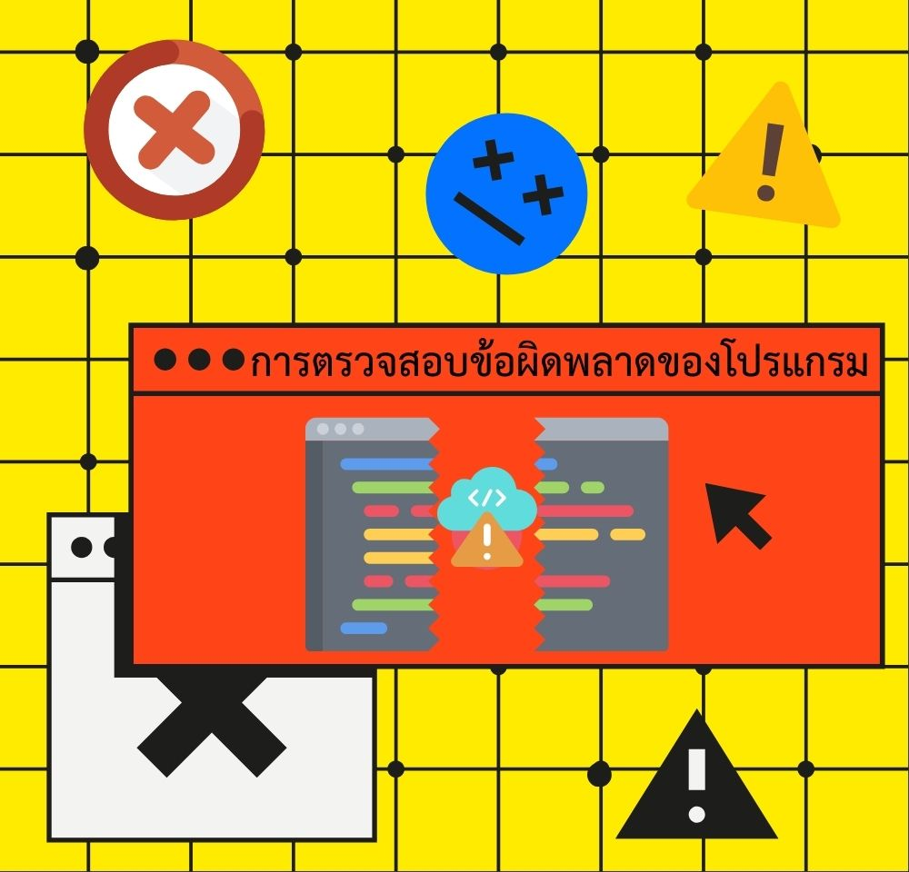

หน่วยที่ 2: ตรวจสอบข้อผิดพลาด
ตรวจสอบข้อผิดพลาด

ประเภทของข้อผิดพลาด
Syntax Error (ข้อผิดพลาดทางไวยากรณ์)
เกิดจากการเขียนโค้ดผิดรูปแบบ เช่น ลืมเครื่องหมายคำพูด, วงเล็บไม่ครบ
print("Hello world) # 缺少 closing quotation markLogic Error (ข้อผิดพลาดทางตรรกะ)
โปรแกรมทำงานได้แต่ให้ผลลัพธ์ไม่ถูกต้อง เนื่องจากตรรกะผิด
area = length + width # ควรเป็น length * widthRuntime Error (ข้อผิดพลาดขณะทำงาน)
เกิดขณะโปรแกรมทำงาน เช่น หารด้วยศูนย์, เปิดไฟล์ที่ไม่มีอยู่
result = 10 / 0 # Division by zeroเทคนิคการแก้ไขข้อผิดพลาด
การตรวจสอบ
- อ่านข้อความ error อย่างละเอียด
- ตรวจสอบบรรทัดที่แจ้ง error
- ดูตัวอย่างจากเอกสารหรืออินเทอร์เน็ต
เครื่องมือช่วย
- ใช้ debugger
- เพิ่มคำสั่ง print() เพื่อดูค่าตัวแปร
- ทดสอบทีละส่วน